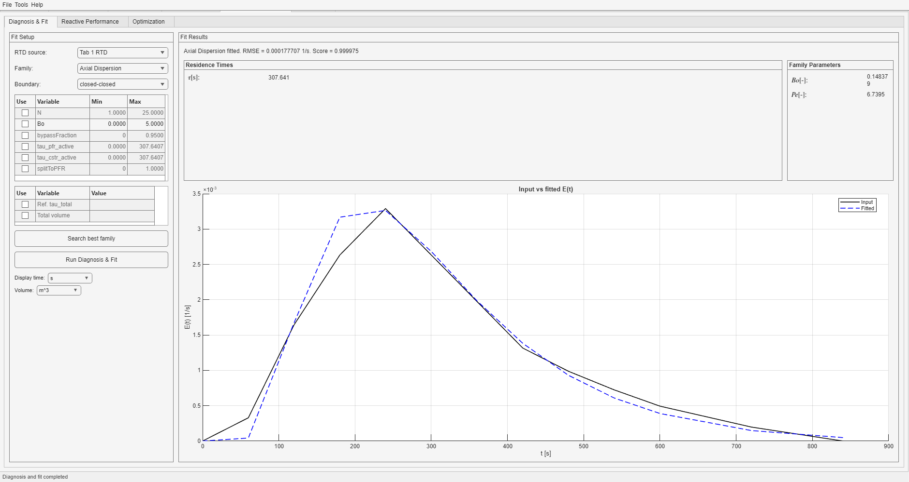

This subtab tries to reproduce the RTD of Tab 1 with equivalent hydrodynamic families. It is useful when you want an interpretable surrogate such as Tanks-in-Series, Axial Dispersion, or mixed families with dead volume or bypass.
What You Configure Here
Control block
Role
RTD source
Selects which RTD is being fitted. In the current workflow, this is normally the RTD coming from Tab 1.
Family
Chooses the equivalent hydrodynamic family that will try to reproduce the reference RTD.
Boundary
Applies when the selected family needs an axial-dispersion interpretation.
Main constraint table
Defines numeric bounds for the family parameters that are relevant to the current fit route.
Scalar constraint table
Handles the special scalar entries such as reference total residence time or total volume when those are relevant.
What It Does Well

Representative computed fit. The result panel combines summary fields for the selected family with a direct comparison between the input RTD and the fitted RTD.
Compare several hydrodynamic families against the same RTD.
Report best-fit parameters and family comparison metrics.
Provide a fitted RTD that can later be reused by Reactive Performance or Optimization.
Most useful outcome: a good fit is valuable not only as a score, but because it gives you a compact hydrodynamic story you can carry into later design discussions.
Typical Workflow
Select the RTD source, normally the RTD from Tab 1.
Choose one family or run the multi-family search route.
Use constraints only where they make physical sense for the chosen family.
Run the fit and compare both parameter values and fit quality.
When to constrain more
When you already know a physically realistic range for a parameter.
When two families only differ meaningfully in a bounded parameter region.
When to constrain less
When you are still exploring which family can explain the RTD at all.
When a tight bound is forcing a visually poor fit just to satisfy a guess.
How to Read the Result Area
Summary line: tells you which family was fitted and how closely it matched the input RTD.
Residence-time / family-parameter boxes: give the compact parameter interpretation of the fitted model.
Input vs fitted E(t): is the fastest visual check of whether the fitted family is reproducing the relevant parts of the RTD shape.
Best use of this subtab: do not stop at "the score is good". Also check whether the fitted parameter values are physically reasonable for the reactor interpretation you want to tell.
If you need a more direct RTD-reading refresher before judging fit quality, use the RTD Interpretation appendix.
What to Watch Closely
Constraint configuration only makes sense if its units and meaning are consistent with the selected family.
The diagnosis flags are engineering hints, not rigorous fault diagnosis.
A good numerical fit is not the same as a unique physical explanation of the reactor internals.
Typical Mistakes
Over-constraining a family until it can only match the RTD numerically in a distorted way.
Comparing families without remembering that some parameters only exist for some family structures.
Assuming the best score automatically means the best engineering story for the real reactor.